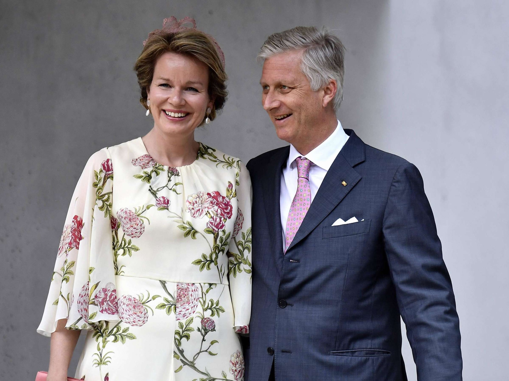

Die Regierung Belgiens ist ein föderales System, das aus mehreren Ebenen besteht,
darunter die föderale Ebene, die Regionalebene und die Gemeindeebene. Das Land
ist seit 1830 eine konstitutionelle Monarchie und hat eine parlamentarische Demokratie.
Der König ist das Staatsoberhaupt, aber seine Rolle ist in erster Linie repräsentativ
und zeremoniell.

Das belgische Königspaar
Die föderale Regierung Belgiens besteht aus einem Premierminister und mehreren
Ministern. Die Regierung wird vom König ernannt und muss vom Parlament genehmigt
werden. Die Regierung ist für die Durchführung der Bundesgesetze und für die Verwaltung
der Bundesbehörden verantwortlich. Zu den wichtigsten Bereichen, in denen die
föderale Regierung tätig ist, gehören Justiz, Außenpolitik, Verteidigung, Finanzen und
Sozialwesen.
der belgische Premierminister
Belgien hat auch drei Regionen, die jeweils eine eigene Regierung haben:
die Region Brüssel-Hauptstadt, die Region Flandern und die Region Wallonien.
Jede Region ist für ihre eigenen Angelegenheiten wie Wohnungsbaupolitik,
Wirtschaft und Umwelt zuständig. Die Region Brüssel-Hauptstadt ist ein besonderer
Fall, da sie nicht Teil einer der drei Gemeinschaften (Flämisch, Französisch
und Deutschsprachig) ist.
Auf der Gemeindeebene gibt es 589 Gemeinden in Belgien, jede mit ihrer eigenen
Gemeinderegierung. Die Gemeinden sind für lokale Angelegenheiten wie Abfallentsorgung,
Straßenbau und öffentliche Sicherheit verantwortlich.
Die Regierung Belgiens ist bekannt für ihre komplexe Struktur und die Schwierigkeiten,
die mit dem Föderalismus verbunden sind. Es gibt oft Spannungen zwischen den verschiedenen
Ebenen der Regierung, insbesondere zwischen der föderalen Regierung und den Regionen.
Nichtsdestotrotz ist Belgien eine stabile Demokratie, die für ihre fortschrittliche Politik
und ihre Toleranz gegenüber Vielfalt und Multikulturalismus bekannt ist.